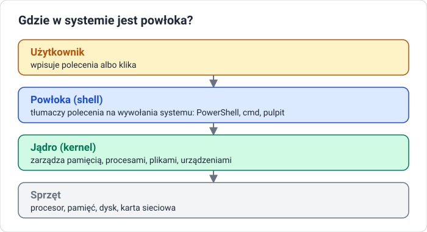
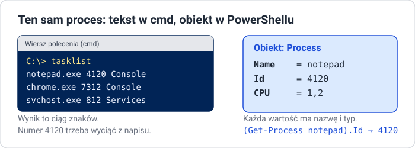
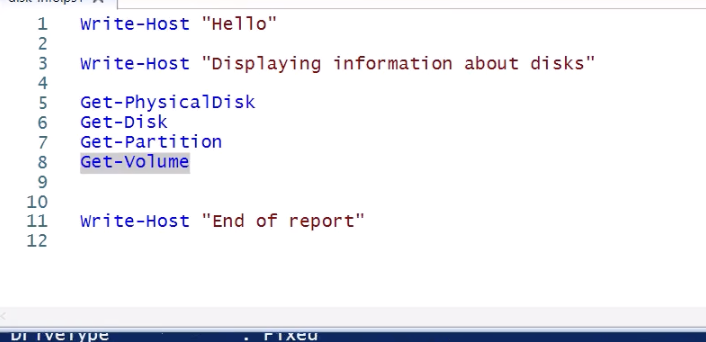

Lekcja 1 — Czym jest powłoka
Cel lekcji
Po tej lekcji będziesz umieć wyjaśnić, czym jest powłoka i czym różni się praca w GUI od pracy w wierszu poleceń, opisać najważniejsze etapy historii PowerShella, wyjaśnić różnicę między tekstem a obiektem, uruchomić PowerShell jako administrator i napisać pierwszy skrypt w ISE.
Gdzie w systemie jest powłoka

Powłoka (shell) to program, który przyjmuje polecenia od człowieka i przekazuje je systemowi operacyjnemu. Powłoka nie jest częścią jądra — to zamienny program. Powłoką jest też graficzny pulpit: kliknięcie ikony to także polecenie dla systemu.
Dwa sposoby rozmawiania z systemem
| GUI — interfejs graficzny | CLI — wiersz poleceń |
|---|---|
| okna, menu, przyciski | polecenia wpisywane tekstem |
| łatwy na start, widać opcje | wymaga znajomości nazw poleceń |
| każdą operację trzeba wyklikać ręcznie | polecenia można zapisać w pliku (skrypt) |
| trudno powtórzyć 100 razy tak samo | powtarzalne, szybkie, bez pomyłek |
| wolny przy dużej liczbie zadań | działa też zdalnie, bez grafiki |
Przykład: trzy foldery. W GUI to około 12 kliknięć: prawy przycisk → New → Folder → nazwa → Enter, trzy razy. W PowerShellu jedna linijka:
Zmieniasz 3 na 100 i masz sto folderów w sekundę. Każdy element tej linijki poznasz w tym dziale.
Rodzaje powłok
| cmd.exe | PowerShell | |
|---|---|---|
| Czym jest | klasyczny wiersz poleceń Windows | nowoczesna powłoka Microsoftu |
| Polecenia | proste: dir, copy, ipconfig |
cmdlety i potok obiektów |
| Wynik | zwykły tekst | obiekty |
| Skrypty | pliki .bat |
pliki .ps1 |
Każdy system ma swoją powłokę (Linux najczęściej bash), ale idea jest wspólna: polecenia i skrypty.
Po co administratorowi wiersz poleceń
- Automatyzacja — zadanie wykonane raz zapisujemy i uruchamiamy, ile razy trzeba.
- Powtarzalność — skrypt założy 50 kont tak samo, człowiek się pomyli.
- Szybkość — jedna linijka zastępuje dziesięć kliknięć w kilku oknach.
- Zdalna praca — serwerem można zarządzać bez pulpitu, przez sieć.
- Dostęp do wszystkiego — ustawienia, których GUI nie pokazuje, są dostępne z konsoli.
Klasyczny cmd ma ograniczenia: wynik to tekst, język skryptów .bat jest ubogi, żeby wyciągnąć jedną liczbę, trzeba ciąć napisy, a każde narzędzie ma własne przełączniki i format.
Skąd wziął się PowerShell
| Rok | Wydarzenie |
|---|---|
| 1993 | cmd.exe w Windows NT — tekstowa powłoka |
| 2002 | Jeffrey Snover pisze Monad Manifesto: powłoka oparta na obiektach |
| 2006 | PowerShell 1.0 |
| 2009 | PowerShell 2.0 — zdalne wykonywanie poleceń, w Windows 7 i Server 2008 R2 |
| 2016 | otwarty kod, wersje dla Linuksa i macOS; Windows PowerShell 5.1 |
| 2018 | PowerShell Core 6 — oparty na .NET Core |
| 2020 | PowerShell 7 — jedna linia dla wszystkich systemów |
Dwie wersje
| Windows PowerShell 5.1 | PowerShell 7 |
|---|---|
program powershell.exe |
program pwsh.exe |
| wbudowany w Windows i Windows Server | instalowany osobno |
| oparty na .NET Framework | oparty na nowoczesnym .NET |
| tylko Windows | Windows, Linux, macOS |
| tego używamy na zajęciach | te same podstawy, nowsze możliwości |
Wersję sprawdzisz zmienną $PSVersionTable:
PSVersion 5.1 i Desktop to Windows PowerShell. PSVersion 7 i Core to PowerShell 7.
Najważniejsza idea: tekst kontra obiekty

W cmd numer procesu to druga kolumna tekstu — trzeba go wyciąć z napisu.
W PowerShellu Id to właściwość obiektu. Wynik to czysta liczba, nic nie trzeba wycinać.
Co to jest obiekt
Obiekt = cechy + czynności.
- Właściwości (Properties) — cechy, które można odczytać:
Process.Name,Process.Id,Process.CPU. - Metody (Methods) — czynności, które obiekt potrafi wykonać:
Process.Kill(),Process.Refresh().
PowerShell jest zbudowany na platformie .NET: wszystko jest obiektem pewnego typu. Typy podstawowe to np. [int] (liczba całkowita), [string] (napis), [bool] (prawda/fałsz), [datetime] (data). Typy złożone to proces, usługa, plik, folder, użytkownik.
Przykład: obiekt daty.
PS> $d = Get-Date
PS> $d.Year # właściwość: odczytujemy cechę
2026
PS> $d.DayOfWeek # właściwość
Sunday
PS> $d.AddDays(7) # metoda: obiekt coś robi i zwraca nową datę
Metoda ma nawiasy, właściwość nie.
Uruchamianie PowerShella
- Start → wpisz
PowerShell→ Windows PowerShell - Win + X → Windows PowerShell (Admin)
- Win + R →
powershell→ Enter - jako administrator: prawy przycisk → Run as administrator
Okno administratora
Bez praw administratora wiele poleceń zgłosi błąd dostępu. Okno administratora ma w tytule słowo Administrator:.
Gdzie pracujemy
| Konsola | Windows Terminal | ISE |
|---|---|---|
okno powershell.exe, dostępne w każdym Windows |
nowsza aplikacja z kartami, domyślna w Windows 11 | Integrated Scripting Environment — edytor skryptu z konsolą |
| do pojedynczych poleceń | na Server 2022 zwykle trzeba ją doinstalować | kolorowanie składni, F5 uruchamia skrypt, F8 zaznaczony fragment |
Jak czytać znak zachęty
PS — to PowerShell, nie cmd. C:\Users\Administrator — bieżący folder. > — gotowy do przyjęcia polecenia.
Przydatne na start
- Kopiowanie w klasycznej konsoli: zaznacz myszą i naciśnij Enter; wklejasz prawym przyciskiem myszy.
Show-Command Get-Process— okno z formularzem parametrów polecenia.Start-Transcript .\hist.txt…Stop-Transcript— zapisuje wszystko, co wpisujesz i widzisz. Plik otworzysz poleceniemnotepad.exe .\hist.txt.
Pierwsze polecenia
Get-Date
$PSVersionTable
Get-Location
Clear-Host
Write-Output "Witaj w PowerShellu"
Write-Host "Witaj z Write-Host"
Get-Servie
Ostatnia linia to celowa literówka. Przeczytaj komunikat błędu — czerwony tekst mówi, co i w którym miejscu się nie udało.
Pierwszy skrypt w ISE

Write-Host "Hello"
Write-Host "Displaying information about disks"
Get-PhysicalDisk
Get-Disk
Get-Partition
Get-Volume
Write-Host "End of report"
Write-Hostwypisuje tekst na ekran.- Cztery polecenia pokazują informacje o dyskach: fizycznych, logicznych, partycjach i woluminach.
- Skrypt to zwykła lista poleceń wykonywana od góry do dołu.
- F5 uruchamia cały skrypt, F8 tylko zaznaczony fragment (na zrzucie:
Get-Volume).
Sprawdź się
1. Powłoka
Czym jest powłoka (shell) i gdzie znajduje się między użytkownikiem a systemem?
2. CLI kontra GUI
Podaj dwie zalety wiersza poleceń w porównaniu z klikaniem w GUI.
3. Tekst i obiekty
Jaka jest najważniejsza różnica między wynikiem polecenia w cmd a w PowerShellu?
4. Właściwość i metoda
Czym różni się właściwość obiektu od jego metody? Podaj przykład na obiekcie daty.
5. Wersja
Jak sprawdzisz, czy pracujesz w Windows PowerShell 5.1, czy w PowerShell 7?
6. Własny skrypt
Napisz w ISE skrypt info.ps1, który wypisuje powitanie, a potem pokazuje datę, wersję PowerShella i bieżący folder. Zapisz go w C:\PS_Lab i uruchom klawiszem F5.